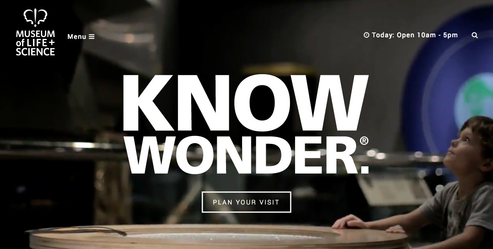
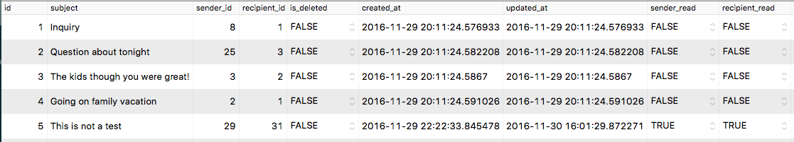
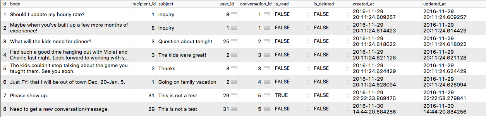

Created by Lori Baumgartner
|  |
Create an in-app messaging system similar to email for all user types to communicate with one another.
Good place to demo and consider other ideas my team hadn't yet thought of/considered.
Trashcan? What about deleting?
Two tables:


Aliasing!
#app/models/user.rb
class User < ApplicationRecord
include Messageable
has_many :posted_jobs, :class_name => "Job", foreign_key: "family_id"
has_many :assignments, :class_name => "Job", foreign_key: "sitter_id"
has_many :sent_messages, :class_name => "Message", foreign_key: "user_id"
has_many :received_messages, :class_name => "Message", foreign_key: "recipient_id"
has_many :conversations
...
end#app/models/message.rb
class Message < ApplicationRecord
belongs_to :conversation
belongs_to :sent_message, :foreign_key => :user_id,
class_name: 'User'
belongs_to :received_message, :foreign_key => :recipient_id,
class_name: 'User'
...
end
#app/models/conversation.rb
class Conversation < ApplicationRecord
belongs_to :sender, :foreign_key => :sender_id,
class_name: 'User'
belongs_to :recipient, :foreign_key => :recipient_id,
class_name: 'User'
has_many :messages, dependent: :destroy
...
end#app/models/messageable.rb
module Messageable
def send_message(recipient, msg_body, subject)
convo = Conversation.where({recipient_id: self.id,
sender_id: recipient.id}).or(Conversation.where({recipient_id: recipient.id,
sender_id: self.id})).first
if convo.nil?
convo = Conversation.create!(
recipient: recipient,
recipient_read: false,
sender_read: true,
sender: self,
subject: subject
)
else
if convo.sender_id == self.id
convo.update_attributes(sender_read: false,
recipient_read: false)
else
convo.update_attributes(sender_read: false,
recipient_read: false)
end
end
message = Message.create!({
:user_id => self.id,
:recipient_id => recipient.id,
:conversation_id => convo.id,
:body => msg_body,
:subject => subject
})
end
end
#app/controllers/conversations_controller.rb
class ConversationsController < ApplicationController
def index
@conversations = Conversation.get_user_conversations(current_user)
render json: @conversations
end
def show
@conversation = Conversation.get_conversation(params[:id], current_user)
render json: @conversation
end
...
end#app/models/conversation.rb
def self.get_conversation(options, current_user)
convo = Conversation.find(options)
if convo.sender_id == current_user.id
convo.update_attribute(:sender_read, true)
elsif convo.recipient_id == current_user.id
convo.update_attribute(:recipient_read, true)
end
sender_name = "#{convo.sender.first_name} #{convo.sender.last_name}"
recipient_name = "#{convo.recipient.first_name} #{convo.recipient.last_name}"
@conversation = { "id" => convo.id, "subject" => convo.subject,
"sender_id" => convo.sender_id, "sender_name" => sender_name,
"recipient_id" => convo.recipient_id,
"recipient_name" => recipient_name, "sender_read" => convo.sender_read,
"recipient_read" => convo.recipient_read,
"created_at" => convo.created_at.strftime("%m/%d/%Y %I:%M %p")}
end#app/controllers/messages_controller.rb
class MessagesController < ApplicationController
def index
@conversation = Conversation.find(params[:conversation_id])
@convo_read = Conversation.get_conversation(params[:conversation_id], current_user)
@messages = Message.get_messages(@conversation)
render json: @messages
end
def show
@message = Message.show_message(params[:id])
render json: @message
end
def new
@message = Message.new
end
def create
recipient = User.find(params[:id])
sender = current_user
conversation = sender.send_message(recipient, params[:body],
params[:subject])
end
def toggle_deleted_message
message = Message.find(params[:id])
message.toggle!(:is_deleted)
end
def get_possible_recipients
@recipients = User.get_recipients
render json: @recipients
end
end